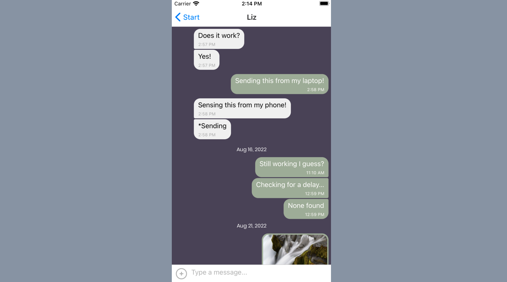

Chat App
Chat App is a real-time native mobile app written in JS using React Native. It is connected to a Firebase database to allow users to remotely chat with each other live, as well as share pictures or their location. The app works offline, loading chached messages from the last online visit.
Testing was set up using Expo, in conjuction with iOS simulator and the Expo Go mobile app.
An installable version of the app has not been published and I have no plans to do so, but full instructions on how to download and use the app with Expo can be found in the GitHub README.